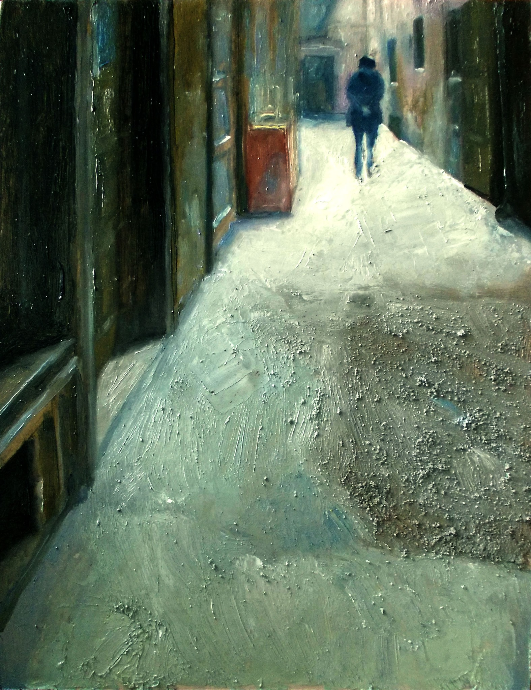

Peisaje urbane / pictură în ulei
Sorin Drăgoi
Spații de trecere, urme, lumină și absență.
Statement
Între ceea ce dispare și ceea ce persistă
Lucrările mele pornesc din observația spațiilor urbane aparent secundare: scări, ferestre, uși, coridoare, fațade sau fragmente de arhitectură care păstrează urmele trecerii timpului.
Nu urmăresc simpla documentare a realului, ci tensiunea dintre prezență și absență, dintre ceea ce se vede și ceea ce rămâne suspendat.
Fiecare lucrare devine un spațiu de așteptare, o imagine care încetinește privirea și o invită să locuiască, pentru un timp, între urmă, lumină și memoria unei posibile locuiri.
Seria centrală
Spațiu, trepte, ferestre
Praguri
Porți
Oraș
Fațade, cer, noapte
Prezentare artist
Sorin Drăgoi
Sorin Drăgoi este artist vizual din Timișoara, cu formare în pictură. Practica sa artistică explorează memoria locurilor, spațiile de trecere și relația dintre imagine, absență și materialitate. Lucrează în pictură în ulei, acuarelă și obiecte unicat din lemn recuperat.
0727 116 911 soridra@yahoo.com Timișoara